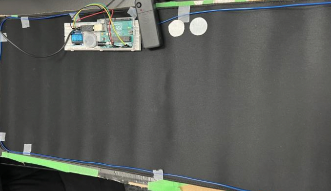

MAKER LAB 2
Gaming Mousepad
Summary
In order to increase in-game immersion for casual gamers, our suggested idea is a multi-modal mousepad that especially innovates on gameplay experiences by adding technology like haptics, LED graphics, and audio signals. Including elements that favour immersion rather than absolute distraction-free functionality for competitive edge is made possible by catering to non-competitive gamers. On the other hand, somatic interaction design acknowledges the body as a crucial component of the user's experience and aims to create experiences that involve the body's sensory and perceptual processes.By including tactile, visual, and aural elements to provide a more sensual and embodied experience. The fundamental objective is to provide physical, visual, and auditory elements to create a more sensory-rich experience. In order to increase accessibility and inclusivity for those with physical limitations when interacting with digital information, the mousepad may contain features like haptic feedback and sensory encouragement.



Description
The goal of this project is to investigate how a person's perception of their interaction with media technologies and digital interfaces is influenced by their physical characteristics. Understanding how the body interacts with technology can help us create user interfaces that are more efficient and accommodating of users' range of physical and cognitive skills. To do so we wanted to add different features in our prototype but while doing it we faced few challenges. While adding the code to the Arduino IDE app we had some issues, we were not able to display the logo image on the screen. After researching we found out that to add the image we have to convert it into BMP. Before we were going to use a smaller mouse pad but that wouldn’t add all the features that we want our mousepad to have. We wanted to add a vibration motor to our low fidelity prototype but couldn't as the hardware started getting pricey.
Review
PROTOTYPE PRODUCTION METHOD DETAILS
To make this prototype we first put all our ideas on paper and created a sketch. Then we designed our final prototype by making a 3D sketch which we showed in our presentation. Then we collected all our Materials to make the Low fidelity prototype.
Materials needed:
- Mousepad (preferably a large one)
- LED strip lights
- Glue/Double sided tape
- Arduino
- Wires, Bread Board
- LCD display Screen
Steps:
1. Trim the LED lights then attach it on the edges with glue.
2. Used a bottle cap to make the volume button.
3. Cut the paper into circles to make buttons.
4. Added arduino to our prototype
5. Add code to diplay our logo on the LCD display screen
The listed production methods suggest a design process that was resourceful, user-centered, and technically skilled. The design process began with a clear understanding of the problem, followed by a creative approach using materials at hand. Prototyping and testing multiple iterations refined the design concept. The inclusion of buttons and volume control suggests a focus on user needs. Technical skills were used, such as the Arduino, LCD display, and LED lights. Overall, the production methods reflect a well-rounded design process that includes problem-solving, resourcefulness, and technical skills.
Concluding Evaluation
This project taught me a lot of new things while also expanding my knowledge of Somatic experiences. The experiment showed the relevance of incorporating the somatic experience when creating digital interfaces by analysing how a person's physical traits and somato-sensory experiences influence their perception of media technologies. The study highlighted the usefulness of multi-modal experiences in building more engaging and accommodating user interfaces by combining visual, audio, and tactile experiences. Overall, the experiment revealed how somatic design methods may be used to develop more inclusive, engaging, and accommodating digital interfaces. As we go forward we would add new features and would also take the feedback to improve our prototype. This project can be customized further with additional features such as a built-in USB hub, wireless charging, or additional lighting effects. To make the experience more comfortable we also added an Armrest. Overall, we would like to make our prototype better in the future and also incorporate new types of features to make the somatic experience better.
The Love Lamp
Summary
The challenge for the second somatic design project was to incorporate a component that engages the user's somatic experiences through sight, hearing, touch, and motion. For this project we created a network of lamps that could be controlled by the user of the linked lamp as well as a pair (or larger network) of lamps that could be customized by the user. Users can use the lamp's customizable colours, vibrancy, filters, and patterns/shapes to create personalized light setups/configurations/messages, which they can then upload and share online. This allows two users in different locations, separated by distance, to feel connected in some way using a product that supports one of our most basic and necessary senses: sight. Users can transform a simple instrument (a lamp) into a delightful experience that aids them in maintaining indirect contact with individuals they care about by altering the lighting, patterns, and other features of the lamp in their friend's or loved one's room.
Description
The love lamp has sensory-stimulating technology, including a moveable LED, movable filters for light messages, and an OLED panel for connectivity and battery life data. It connects to the IoT using Wi-Fi enabled microcontrollers and can be controlled remotely via voice assistants or mobile apps using Wi-Fi light bulbs. These features would be in our high fidelity prototype that we would make in the future. While making our prototype we faced a few problems. We needed fittings that would be attractive and durable, but we also didn't want to spend a lot of money. Making sure that the light streams across the space bright enough presented another issue for us. We employed more light sources and larger fixtures to address this. To ensure a uniform distribution of light, we also needed to discover a good technique for light diffusion. Additionally, we had to change our original plan of using the 3D printer due to technical issues.
Review
We originally sketched out all of our thoughts for this prototype on paper. After that, we created a 3D sketch of our final prototype, which we displayed at our presentation. Our original idea was to use 3D printing but we were not able to use it.
Materials:
- Desk Lamp
- Cardboard Cutouts
- Arduino
- OLED screen
- Paper Stencils
Steps:
- We made a box from cardboard to cover our light.
- We made stencils on paper.
- Added arduino to our prototype
- Added code to display our screen on the LCD display screen
The 3D sketch shows our High Fidelity prototype which is our original idea whereas the hand drawn sketch is our low fidelity prototype that we made for this project.


Concluding Evaluation
Through this project I was able to increase my knowledge about the somatic experiences and the Internet of things, as I move foward I would like to use what I learned in my future projects. It may be possible to upgrade the Love Lamp with new features, such as music to enhance the somatic experience. Various types of bulbs, a bracelet extension with light-up features, a larger screen, wireless capabilities, a wider variety of messages, audio messages, wireless capabilities, a wristband extension with a larger screen, and an app that serves as a control pad are other ideas. Additionally, a voice-activated virtual assistant like Siri or Alexa may be added.Overall, we want to improve our prototype going forward and include additional kinds of functionality to enhance the somatic experience.